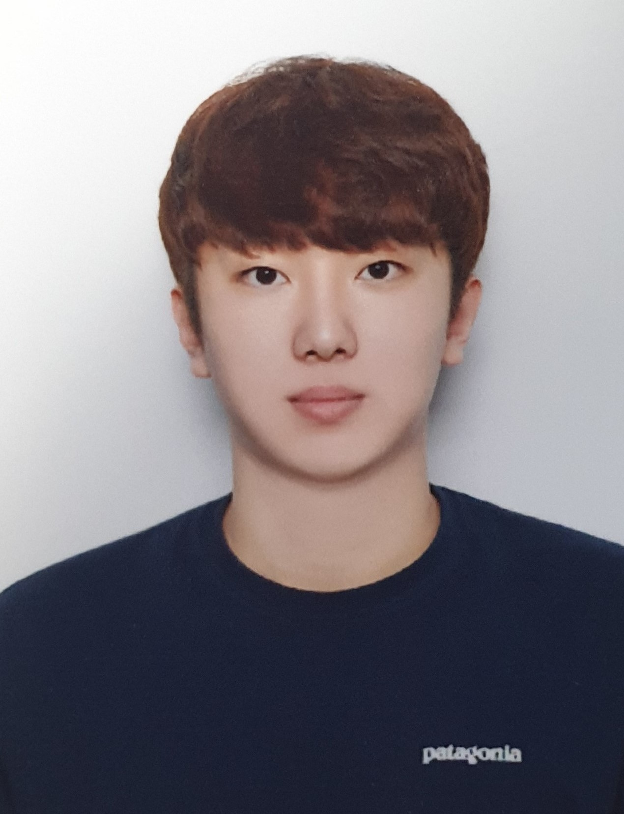

About Me

안녕하세요. 생년월일은 2000년 10월 31일이고 고향은 대구광역시이며 개발자를 꿈꾸고 있는 임성민입니다.
저는 AI가 빠르게 변화하는 분야인 만큼, 개발자에게는 최신 기술과 연구 결과를 지속적으로 학습하고 변화에 적응하는 능력이 중요하다고 생각합니다.
제 좌우명인 "인생은 사막이다"처럼 예측할 수 없는 변화 속에서도 유연하게 적응하며 성장하려는 도전적인 자세가 필요하다고 믿습니다.